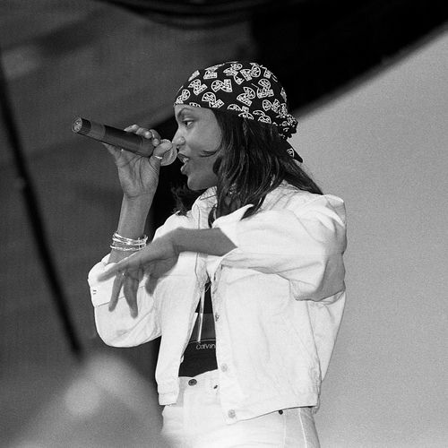

Ceybil Jefferies
Ceybil Jefferies, also known by the stage name Sweet Sable, was an American house and R&B vocalist best known for her work during the 1990s, including the 1996 Dutch house single, "It's Gonna Be Alright" with Deep Zone, which hit No. 20 on the Billboard Dance Club Songs chart. Her other best known singles include "Love So Special" and "Open Your Heart", both of which reached the top 20 of the Billboard Dance Club Songs chart in 1991. Jefferies, who sometimes went by the stage name Sweet Sable beginning in 1994, often changed the spelling of her name or reinvented it, depending on the release. Variations of her name included Ceybil, Sable Jefferies, her birthname Sybil Jefferies, and Ceybil Jeffries.
Complete Discography & Tracklists (2)